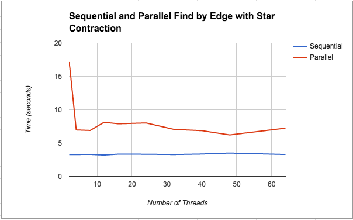
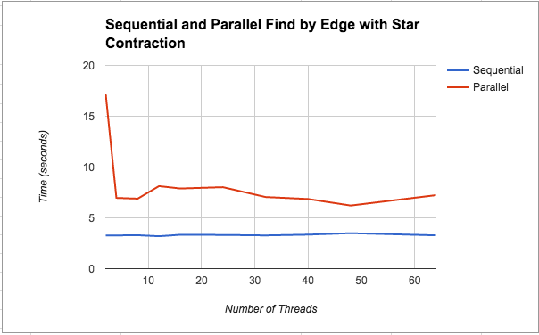

Parallelizing Borůvka's Algorithm
(Final Writeup)
By Kathleen Fuh (kfuh) and Shreya Vemuri (shreyav)
Summary
For our project, we wrote a sequential version of Borůvka’s algorithm for finding minimum spanning trees in C++ and optimized its performance on a CPU using OpenMP and parallelizing techniques. In the process of parallelizing, we explored both edge and star contraction techniques for Borůvka’s algorithm. We then analyzed the performance on the GHC machines with various numbers of threads.
Background
A spanning tree of a connected, undirected graph G with vertex set V and edge set E is a connected subgraph of G that includes all vertices of G and exactly |V|-1 edges. When given a connected, weighted, undirected graph, the minimum spanning tree (MST) is a spanning tree with minimum total edge weight.
The key property that drives many MST algorithms is the light edge property. This property states that for any cut of a connected, undirected, weighted graph G, the edge with minimum weight that crosses the cut must be in the MST.
Borůvka’s algorithm is a well-known parallel algorithm for finding MSTs. It makes use of the light edge property by observing that the minimum weight edge incident on any vertex v must be in the MST (the cut of the graph in this case partitions the graph into one set containing the single vertex v and a second set containing the rest of the graph). This observation introduces an axis of parallelism along vertices because edges in the MST can be selected in parallel by looking at each vertex. Using this idea, Borůvka’s algorithm works as follows
While there are still edges:
- Find the minimum weight edge incident on each vertex (these edges will form at least one connected component)
- Contract each connected component, creating a new super vertex for all vertices in the component
- Add the minimum weight edge between super vertices to the MST and remove all other redundant edges.
There are two different techniques to approaching this algorithm when contracting the graph: edge contraction and star contraction:
- Edge contraction: Edge contraction involves finding the min edge incident to each vertex (in the first iteration) and each component thereafter. We then add these edges to our MST and perform the necessary contractions in the contraction stage. This utilizes the light-end property as was discussed above
- Star contraction: Star contraction involves flipping a coin for each vertex/ component and finding the heads and tails. This is necessary in star contraction, so we contract into the head and so that we can determine what are the star centers and star satellites. Particularly, we make 0 mean you are a satellite (false) and 1 mean you are a star center (true).
Here are some implementation details: Our algorithm takes in a graph structure as input and prints out the edges of the MST
Key data structures:
- Union find data structure: Our union find is based on having a struct which holds information about the parent and rank of each node. This allows us to store information about which component each node belongs to in order to determine which edges are valid edges to contract.
- Graph representation: We model the undirected graph with an underlying representation of a directed graph (so a directed edge is listed in the graph twice for the two directions). We based our representation off of the representation used in assignment 3. (Please see the Approach section for more information on how we decided on our graph representation).
Key operations:
- Find parent and union (read a paper which used compare and swap and that worked pretty well and allowed us to not have to lock up an entire section in order to call these functions)
- We didn’t use the rank attribute for the parallel version of Borůvka’s because that would require an atomic increment which we thought would result in some slowness
Excessive computation and dependency challenges:
- The algorithm is broken down into two main components: finding minimum edges out of each component and contracting the graph, each of which posed its own challenges throughout the process of parallelizing
- Finding min edges could be computationally expensive based on what axis of parallelism is necessary, especially since we were using the same graph on every iteration rather than actually creating a new contracted graph. We found that we were doing extra work here and had to change our approach as we explain in the next section
- The contraction stage also had dependencies based on the union-find operations that were done on both endpoints of the edge being contracted. This introduced a critical region that we had to fix. Our approach to account for this is also explained in the next section
Other challenges:
- Creating graphs (explained in the Approach section)
- Writing a lock-free union data structure, so that we could decrease the granularity of our locking and critical sections
Approach
Technologies:
- We used the GHC machines and C++ for this project. We also used some Python for graph creation and correctness checks. In order parallelize our implementation on the CPU we used OpenMP primitives.
| Property | Spec Detail on GHC 26 |
| Architecture: | x86_64 |
| Thread(s) per core: | 2 |
| Core(s) per socket: | 6 |
| Socket(s): | 1 |
Graph Representation:
Initial idea: We determined that we wanted some kind of adjacency list because an adjacency matrix for high vertex counts would be space inefficient (to add to the space, we also needed weights so we would not be able to just use a boolean matrix). Because we need weights on the edges, we started by creating an Edge struct type that held a source, destination, and weight and then made an adjacency list such that each node had a linked list of all its edges. As we started working with this idea and implemented a sequential version of Borůuvka’s with it, we realized that the linked list would not parallelize well and it would also require a lot of overhead in ensuring correctness if we continued with it for the parallel version.
Final idea: We modeled the undirected graph with an underlying representation of a directed graph (so a directed edge is listed in the graph twice for the two directions). We based our representation off of the representation used in assignment 3. Vertices were numbered from 0 to n-1 where n is the number of vertices. We used three arrays, one for offsets, one for destination vertices, and one for weights. The offsets array allowed us to index into the destinations and weights arrays (offset[i] gave us where vertex i’s out-edges started).
Note: The final graph representation, although easy to visualize, does not lend itself well to updating the graph itself. In 15-210 when we implemented Borůvka’s algorithm we could easily create a new graph by simply creating new vertex and edge sets every time we contracted the graph. Because of the calculation of offsets which would require sorting (and also require roughly twice the graphs size in space as we essentially make a copy of the graph), we decided we would keep the original graph and always operate on the original graph. We used a union-find data structure to handle the task of finding the component a vertex belonged to. The inability to update the graph as it contracts was a source of challenges as we will mention in the description of our many attempts at optimizations as detailed below.
Graph Creation:
We had wanted to use large graphs created on SNAP, but after working with this and the assignment 3 code, we realized the undirectedness and weights of our graph made translation from assignment 3’s conversion code to our representation difficult. Because of that, we decided on creating our own graphs using pseudorandomness for generating edges and weights. Because our graph representation required sorting edges by source node in order to figure out offsets and C++ is not the easiest language to use for such a purpose, we determined our graph structure and values with Python, did all the necessary edge generation and sorting, wrote it out to a text file, and had C++ create the actual graphs using the file information.
For initial testing we made small graphs of about 20 to 30 nodes and 100 to 1000 edges. Because of the pseudorandomness there was no guarantee that the graphs would be connected, so we had to update our code to handle cases of disconnected graphs. Once we had the sequential version working (we tested sequential correctness by hand for smaller graphs), we used it as a correctness checker for our parallel versions. For correctness checking we removed the randomness for edge weights to ensure all edges had distinct weights (because there is guaranteed to be one correct MST if all edges are distinct). The validation program for checking correctness was also written in Python.
Sequential Implementation:
The sequential version does the following:
- Looks through all the edges
- Finds the representative vertices of the source and destination (if they are in the same component - i.e. have the same representative vertex - then we move onto the next edge because this one has already been contracted. Otherwise save it as that component’s minimum weight edge if it is the lightest edge seen so far)
- Once that is complete for all components, use edge contraction to contract the selected edges
This process continues until either the number of components is 1 (this is the case for a connected graph), or until the number of components does not change after an iteration (we know the number of components must decrease by at least one while there are edges to contract)
Parallel Implementations:
Initial attempt: We started by taking the sequential version as it was written and adding parallel for loops. This introduced the need for two critical regions. The first critical region was in the finding minimum edges phase because we had to find the minimum weighted edge which is hard when there are multiple threads reading and writing to the same min address (we needed to implement something like CAS in order to be consistent). The second critical region came in the contraction phase. Because our loop condition relied on the number of remaining components which would have to be decremented after every edge was contracted and the inserts in the mst_edges array relied on incrementing an index variable which needed to be modified by only one thread at a time.
Note: Although the following 2 versions did not yield any speedup (they actually performed much worse than our baseline sequential version), working through all the attempts helped us learn more about the structure of Borůvka’s algorithm and important concepts which ultimately helped us pinpoint smaller issues that helped with later parallel versions
What we learned as we were writing the 2 versions below:
- Did not need to loop through num_components. Instead just have a can_be_contracted boolean. The idea is that if there is an edge to be contracted in the current iteration, the part of the algorithm that finds minimum edges out of each component will identify that edge. That means in our parallel algorithm’s contraction phase, if any thread gets past the check of an edge not being in the same component, we know we have an edge to be contracted. This is especially useful in star contraction. The sequential algorithm kept track of the number of components from the previous iteration compared to the number of the current iteration. If that number had not changed between iterations we would be done. We realized this would have break for star contraction because star contraction depends on coin flips, and if you just so happened to get a distribution of coin flips that did not allow for any edges to be contracted on that iteration then the check against previous number of components would break early and the MST would not be complete
- Did not need to have an mst_edges_index. We realized that if we could determine which vertex of an edge was contracted into which one, we could always put the edge into the vertex that was contracted. The idea behind this is that once a component has been contracted into another component, it will not be contracted again, so we can always put the edge in indices of contracted vertices without worrying about them being overwritten. We rewrote the union find for the edge contraction so that we always contracted the smaller vertex id into the larger vertex id. In star contraction, because we are using random coin flips and we do not have a say in whether the smaller vertex id is the one that gets contracted we actually need a mst_edges array of size n so that the vertex that does get contracted can write directly into its spot. By doing this, we just have to do a little extra work at the end of finding the n-1 edges that are in the MST (this step is not difficult because we have initialized all edges in the mst_edges array to be dummy edges with src 0 dest 0, and we know if a vertex is never contracted into another one, then it will never write to that spot, so we just throw out all the edges that are “dummy edges”). We already had to do this anyways since we handle the case of disconnected graphs where there would be fewer than n-1 edges in the MST. Note that we also guarantee that there will not be a race with this insertion technique because in star contraction we check using compare and swaps to ensure that one vertex is not being simultaneously contracted by multiple other vertices.
Find Minimum Edges by Component with Edge Contraction: To get rid of the first critical region, we tried to parallelize over the vertices. Essentially we wanted to have each vertex that was a representative vertex check all the other vertices for those in the same component. If a vertex was found to be in the same component, they would then iterate through the edges belonging to that vertex looking for the minimum edge. The critical region was not needed in this case because we actually parallelize over the component. We started testing this on a 5000 node graph with 943,000 edges, but it was slower than the sequential.
Find Minimum Edges by Component with Star Contraction: Although this implementation ended up being faster than the edge contraction version on the 5000 node graph, it was still too slow. We created a 1,000,000 node graph with 9,000,000 edges and this version could not complete even after running for over 2 minutes. We determined that trying to mimic the idea of parallelizing finding min_edges over components was not the best idea as we were doing too much unnecessary work. We were essentially doing O(n^2) work by having each representative vertex look through all the vertices. A simple example of where this is bad would be in the first iteration, when every node is it’s own representative vertex. It should only have to look at it’s own edges and be done, but instead it has to loop through all 999999 other nodes and call find_parallel on them to make sure they’re not in the same component.
Note (regarding the two versions of the algorithm below where we find minimum edges out of each component by looping over the edges): when given source and destination vertices for an edge, we only update the component the source is in, even though we could check the destination too. We make this choice in order to avoid deadlock since we are using fine-grained locks. If we lock on component 1 and then component 2 for the source and destination, if another edge is being checked at the same time but its component 1 and component 2 just happen to be flipped (which can happen given our underlying directed representation of an undirected graph), there would be deadlock.
Find Minimum Edges by Edge with Edge Contraction: Having been unsuccessful with our finding minimum edges by vertex idea, we went back to our first parallel version taken from the baseline sequential code with the original two critical sections. We realized that fine-grained locks would help solve our problem. That way instead of locking the entire min_edges array we could just lock by component. We kept everything else the same. This yielded much better results, which are graphed and discussed in the Results section.
Find Minimum Edges by Edge with Star Contraction: We wanted to further speed up the “Find Minimum Edges by Edge with Edge Contraction” version, by parallelizing the contraction using star contraction. The attempt actually slowed down significantly to the point that it was about 2x slower than the sequential version. We discuss our thoughts about the slowdown in the Results section below.
Threads and Chunk Size Choices:
Results
 

References
- 15-210’s notes
- 15-418 Assignment 3
- Paper for lock-free union find
List of Work By each Student
Equal work was performed by both project members.